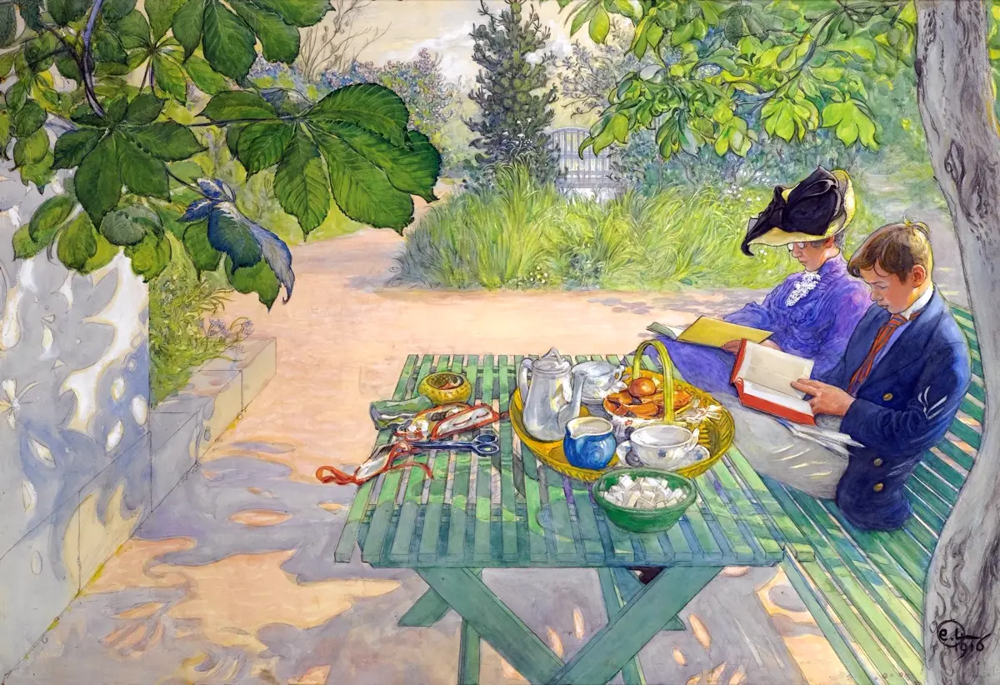

Application: Technical AI Researcher Intern
A letter to Ansh and the Cutting Edge team
Dear Ansh, and the whole Cutting Edge team,
I found your channel almost five years ago, when it was teaching UX design. I stayed through Figma, then ChatGPT, then agents, and now Real Intelligence. Same teacher, four subjects, and I kept showing up for class.
The lesson that stuck: soon a lot of people will know AI, and very few will know how to think. Judgment over taste.
So here is my judgment call. I could fill the form like everyone else and write "curious about AI". Or I could do the job once and show you. I picked the second. It cost me a Saturday.
About me: third-year ECE at DTU, on paper. In practice I research every tool in a space, free and paid, then stitch together my own system so I don't pay for what I can build.
My exams start next week. Naturally, I built a website instead.
Below this letter: two research reports, one honest note about your channel, and proof for every claim I make.
All I'm asking for is three months in your office, from 10 December, doing this every day.
Yours,
Jatin Gupta
This site was built with AI, the way I build everything. Every claim on it was checked by me.
01I did the job once
Three pieces of the work this role asks for, done before applying.
What I bring, with receipts
- Research and information gathering Surveyed 200+ teens and ran a competitor analysis to scope an MVP, then pitched it to senior consultants at EY. evidence
- Turning research into a plan Primary and secondary research into a full go-to-market strategy for BeyondTech. My team won the case competition. evidence
- Hands-on with new AI tools Three open-source AI tools, MIT-licensed: coursera-notes, Chit and ClipNest. evidence
- Enterprise AI A tool that turns a spreadsheet of labelled text into a small model that runs on a laptop CPU. 92.9% on the public Banking77 test set. evidence
- Finding gaps, building the fix A design system and new catalogues across 15+ categories and 250+ SKUs, and a product photography engine on n8n. evidence
- Working with founders, at speed Two paid landing pages for clients in Canada and Australia, in one and three weeks, ₹1.9 lakh in total. evidence
- Product thinking Concept, plan and app screens for Whosin, an event-based dating platform. evidence
- Content and audience Edited for a YouTube channel that grew from 15K to 25K subscribers in about 40 days. Mentored 80+ school students on AI in product, marketing and prototyping.
When I can be in Gurugram
- 10 December to mid-January: full-time, in person.
- Mid-January until June: 4 days a week in person (2 weekdays plus Saturday and Sunday), the rest remote.
- From June: full-time, in person again.
If this schedule does not fit what you need, I would still be glad to get an interview or a quick call to talk it through. I am a philomath, and I adapt fast. Call or WhatsApp: +91 70650 62880.
04My first 30 days, if you take me
- Learn how the team picks topics and what a good research document looks like to you.
- Keep a daily log of AI launches, each item marked tested or untested, short enough to read in five minutes.
- Build a deep companion for new wide videos, if the team wants one.
Contact
- Phone: +91 70650 62880
- Email: reportjatin@gmail.com
- LinkedIn: linkedin.com/in/reportedguy
- GitHub: github.com/reportedguy
- Resume: jatin-gupta-resume.pdf. Honest note: it is out of date. Updating it frustrated me so much that I started building a tool to do it for me. That tool is on hold until my exams end.